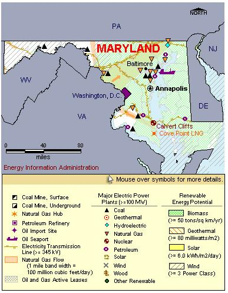

State Overview
There is one operating nuclear power plant in Maryland:
Calvert Cliffs in Calvert County
- Calvert Cliffs was the first nuclear plant to be relicensed by the Nuclear Regulatory Commission (NRC).
- The steam generator for Unit 1 was replaced in 2002. Unit 2's steam generator was replaced in 2003.
- Constellation Energy, owners of the plant, submitted a Combined License Application to the NRC to build and operate a US-Evolutionary Power Reactor at Calvert Cliffs. More information on this application is available in the Status of Potential New Commercial Reactors in the United States.
Contribution of Nuclear Power
Calvert Cliffs represents around 14% of Maryland’s total electric capacity but produces almost 30% of the State’s generation.
Although nuclear power is Maryland’s fourth fuel source in terms of capacity, it ranks second only to coal in generation.
Maryland is a net importer of electric power energy, importing 30% of its electric power use.
License Renewals
- Calvert Cliffs: Calvert Cliffs was approved for a 20-year license extension in March 2000. The license for Unit 1 will now expire July 2034. The license for Unit 2 will now expire August 2036.
New Applications
- Calvert Cliffs: A Combined License (COL) application for an additional reactor at Calvert Cliffs was submitted to the NRC in July 2007. The application is for an Evolutionary Power Reactor (EPR).

|
| Maryland Total Electric Power Industry, Summer Capacity and Net Generation, by Energy Source, 2008 |
| Primary Energy Source |
Summer Capacity
(MW) |
Share of State Total
(Percent) |
Net Generation
(Thousand MWh) |
Share of State Total
(Percent) |
| Nuclear |
1,735 |
13.8 |
14,679 |
31.0 |
| Coal |
4,944 |
39.3 |
27,218 |
57.5 |
| Hydro and Pumped Storage |
590 |
4.7 |
1,974 |
4.2 |
| Natural Gas |
2,038 |
16.2 |
1,848 |
3.9 |
| Other1 |
152 |
1.2 |
623 |
1.3 |
| Other Renewable1 |
135 |
1.1 |
612 |
1.3 |
| Petroleum |
2,991 |
23.8 |
406 |
0.9 |
| Total |
12,585 |
100.0 |
47,361 |
100.0 |
| Maryland Nuclear Power Plants, Summer Capacity and Net Generation, 2008 |
| Plant Name/Total Reactors |
Summer Capacity
(MW) |
Net Generation
(Thousand MWh) |
Share of State Nuclear
Net Generation
(Percent) |
Owner |
Calvert Cliffs Nuclear Power Plant
Unit 1, Unit 2 |
1,735 |
14,679 |
100.0 |
Calvert Cliffs Nuclear PP Inc |
1 Plant
2 Reactors |
1,735 |
14,679 |
100.0 |
|
Plant Profiles
Calvert Cliffs Nuclear Power Plant
| Calvert Cliffs Nuclear Power Plant |
| Unit |
Summer Capacity
(MW) |
Net Generation
(Thousand MWh) |
Summer Capacity Factor
(Percent) |
Type |
Commercial Operation Date |
License Expiration Date |
| 1 |
873 |
7,165 |
93.7 |
PWR |
5/8/1975 |
7/31/2034 |
| 2 |
862 |
7,513 |
99.5 |
PWR |
4/1/1977 |
8/13/2036 |
| |
1,735 |
14,679 |
96.6 |
|
|
|
Operator: Calvert Cliffs Nuclear Power Plant, LLC
Location and Service Territory: Calvert Cliffs Nuclear Power Plant is located in Lusby on the western shore of Chesapeake Bay.
Construction Cost: $2.206 billion (2007 USD)
Reactor Descriptions: Both units are Combustion Engineering two-loop pressurized water reactors.
Cooling System: The Chesapeake Bay is used as a heat-sink in the plant’s once-through cooling system.
see also:
more annual nuclear statistics
projected electricity capacity to 2035
international
electricity statistics
|
|